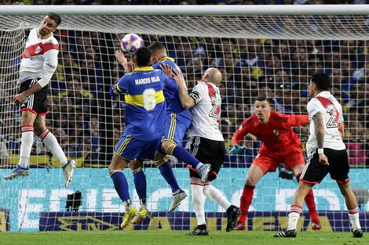

La 12 bostera
Club atletico BOCA juniors.
Club atletico BOCA juniors.
A los 44 minutos del segundo tiempo, Frank Fabra desbordó por la banda izquierda, envió un centro y el Pipa conectó dentro del área: mandó la pelota al fondo de la red para estampar el 1-0 contra el Granate.
 Ver video.Con esta victoria, Boca es el nuevo puntero de la Liga Profesional: llegó a 35 puntos y desplazó a Atlético Tucumán, que quedó escolta con 34 unidades. Huracán (33), Gimnasia (33) y Godoy Cruz (32) son los perseguidores inmediatos.
Darío Benedetto aseguró que sabían que "iba a ser un partido complicado" y que los futbolistas de Boca tenían "que estar metidos". A su vez, sobre su gol, destacó la jugada de Frank Fabra: "Sabía que iba a pasar. Hice un movimiento, me quedé solo abajo del arco. La jugada fue toda de él". "Sabíamos que Lanús estaba necesitado de puntos y se iba a jugar la vida. Nosotros también dejamos todo. Figal terminó el partido con una pierna menos, y lo terminó. Eso demuestra el trabajo del equipo. Hay que seguir de esta manera", sentenció el Pipa.